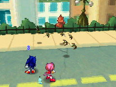

冒険を進めるパーティは4人まで選ぶことができる。
フィールドでは「飛行」や「壁のぼり」など、それぞれのキャラクターの能力を使わないと行けない場所もあるから、いろいろな仲間を冒険へ連れ出してみな！
バトルでの戦い方も、キャラクターによってそれぞれ個性がある。
気に入ったキャラクターはもちろん、キャラクターごとの戦い方が分かってくると、強い敵に出会った時でも、いろいろな戦法を試してみることができるぜ！
「ぐんたいバチ」などのすばやい敵は、攻撃が当たりにくいよ。
攻撃がなかなか当たらないときは、アイテムの「プルーンジュース」を使って味方の命中力を上げたり、ボクの「フラッシュボム」を使って敵のすばやさを下げると、バトルが楽になるよ。
「スワットボット」みたいな防御力が高い敵は、なかなかダメージを与えられないけど、エミーの「投げキッス」で味方の攻撃力を上げたり、ナックルズの「アッパーカット」みたいに相手の防御力に関係なくダメージを与えるパワームーブを使っていこう。
ゲームに登場する敵はすべて、苦手な属性を必ず持っているよ。例えば、空を飛ぶ敵は風属性に弱いんだ。苦手な属性を持つ攻撃が敵に当たるとアイコンが表示されるから、いろいろな攻撃を試して、相手の弱点に合わせた戦い方を見つけてみてね！！
チャオはね～、いろんな力をわけてくれるんだ～。
だからね～、あたらしいチャオが生まれたり、ぼうけんに出るひとが変わったらね～…
チャオも変えてみると、いろいろ、いいんじゃないかな～。
パワームーブを使ったときは、タッチペンで効果が決まりマス。でも、それぞれのパワームーブで起こるタッチペンの操作は決まっているので、最初はうまく行かなくても、あきらめずに挑戦しましょう！
わたしやテイルスさんのパワームーブは、タッチペンの操作が少しむずかしいけれど、成功するととても強力デス！
それに、チャオの「フェロックス」がいれば、タッチペン入力を自動的に成功させてくれるのデス！
パワームーブは便利デスが、パワーポイントが無いと使えません。バトル中に「ぼうぎょ」すると、パワーポイントが回復するので、うまく防御しながら戦いましょう。

アイテムやパワームーブでパワーポイントを回復させるときは、例えば行動がおそい方や、ソニックさんの3回目のアクションでパワーキャンディーを使うなど、ラウンドの最後のほうでパワーポイントを回復させておくと、次のラウンドですぐにパワームーブが使えマス！
アタシたちが最初に出会う強敵「マローダーていさつ兵」は、自分のＨＰを回復させる攻撃を使ってくるから、長い間戦わないほうがいいわ。
アタシの「ローブロー」であいつを弱らせるか、ソニックに「投げキッス」して攻撃力を上げてから「アックスキック」を使ってもらったり、アタシたちのラブラブなパワームーブ「ファストボール」をガンガン使うべきよ、ぜったい！ …なによ、ホントに攻略法かって？ あったりまえじゃない！べつにソニックとイチャイチャしたいわけじゃないからね！
強敵と戦うときは、アイテムを沢山使うことになるかもしれないけど、出し惜しみしないほうがいいわ。
あと、あいつが放つ「スタングレネード」は強力だから、がんばってタッチペンの操作を成功させてね！
テイルスに会ったあとに戦う「スワットボット」は、防御力が高いし、倒したあとに自己修理で立ち上がる、チョーむかつく敵よ！
先に「けいびドローン」を全滅させておいてね。スワットボットの防御力は、ワタシの「ローブロー」とか、テイルスの「スキャン」や「ティンカー」で弱体化できるわ。
自己修理は3回で終わるし、自己修理したあとのＨＰは低いから、粘り強く戦うしかないわね。
チャプター2で探すことになる「エッグマンの古いアジト」は、グリーンヒルとセントラルシティーの中に4つあるわ。
当然、場所を知りたいわよね？ 上画面のミニマップに☆が表示されるから、そこへ行ってみることね。
「グリーンヒル中央の洞くつ」
テイルスの「飛行」を使って行けるわ。
「グリーンヒル南東部の島」
テイルスの「飛行」を使って行けるわ。
「セントラルシティー北東の下水道」
飛行場の南側を東に行くと見つけられるわ。
「セントラルシティー北西の家」
シティーにあるパイプをつなげるパズルを解いて、屋根を伝って進むのよ。
セントラルシティーでは、建物の屋根に上がることができるけど、そのためには、パイプをつなげる必要があるの。
GUN本部の東にいる男に話しかけてから、パズルを解くのよ。カレからヒントをもらうこともできるけど、むずかしいようなら、まぁ、特別に解き方を教えてあげてもいいわ。
グリーンヒルやセントラルシティーにある、上向きの矢印が描かれた壁は、他のやつらには登れない。おれにまかせろ。